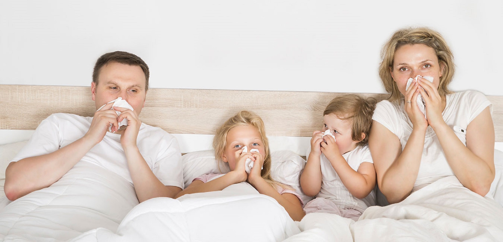

“โรคภูมิแพ้” ใคร ๆ ก็ไม่อยากเป็น

สาเหตุของการเกิดโรคภูมิแพ้
เกิดจากการที่ร่างกายผลิตภูมิคุ้มกันเพื่อขจัดสิ่งแปลกปลอมที่รับเข้ามา
ด้วยการขับสารตัวกลางออกมาต้านสิ่งแปลกปลอมเหล่านั้น
และสารตัวกลางนั้นก็ก่อให้เกิดการอักเสบและอาการแพ้แก่ร่างกายด้วย การเกิดโรคภูมิแพ้เป็นเหตุมาจากภูมิคุ้มกันของร่างกายที่ทำงานมากเกินไป
ทำให้เกิดอาการแพ้ต่อบางสิ่งที่อาจไม่เป็นอันตรายต่อคนทั่วไป แต่เป็นอันตรายต่อตัวบุคคลที่แพ้เท่านั้น
สารที่ร่างกายรับเข้ามาและกระตุ้นให้เกิดอาการแพ้ในลักษณะต่าง ๆ เรียกว่า “สารก่อภูมิแพ้” โดยร่างกายจะมีปฏิกิริยาต่อสารก่อภูมิแพ้ด้วยการแสดงอาการแพ้ในรูปแบบที่แตกต่างกัน
โดยสารภูมิต้านทานซึ่งเป็นโปรตีนที่อยู่ในเลือด มีหน้าที่คอยป้องกัน รวมทั้งขจัดเชื้อโรคและสิ่งแปลกปลอมที่เข้าสู่ร่างกาย ทำปฏิกิริยาตอบสนองต่อสารก่อภูมิแพ้บางชนิดที่ผู้ป่วยแพ้
โรคภูมิแพ้อาหาร ส่วนใหญ่ มักแพ้อาหารจำพวกไข่ นม ถั่ว ปลาและอาหารทะเล การแพ้อาหารจะเกิดขึ้นกับผู้ที่มีร่างกายแพ้ต่อสารก่อภูมิแพ้ในอาหารชนิดนั้นเท่านั้น
ผู้ที่ไม่ได้ป่วยจะไม่ปรากฏอาการแพ้
ภูมิแพ้จมูกหรือภูมิแพ้อากาศ สารก่อภูมิแพ้ที่พบมักมาจากไรฝุ่น เชื้อรา หญ้า ละอองเกสร ขนสัตว์ ที่ฟุ้งกระจายอยู่ในอากาศและเข้าสู่ร่างกายผ่านการหายใจ
ภูมิแพ้ที่เกิดที่ผิวหนังสารก่อภูมิแพ้ที่เข้าสู่ร่างกายผ่านทางผิวหนังมีหลายชนิด เช่น สารเคมีจากผลิตภัณฑ์ทำความสะอาด ถุงมือยาง ยาย้อมสีผม โลหะ เงิน หรือแม้แต่ผงฝุ่นหรือเชื้อโรคที่ลอยอยู่ในอากาศ
อาการ
1. แพ้อากาศ หวัดเรื้อรัง (Allergic rhinitis) ตอนเช้ามีน้ำมูก มีเสมหะในคอตลอดเวลา
2. หอบหืด (Asthma) เป็นโรคในกลุ่มภูมิแพ้ต่อตัวเอง เนื้อเยื่อในหลอดลมจะบวม หลอดลมตีบ หายใจลำบาก
3. ภูมิแพ้ของตาและหู (Allergic conjunctivitis) จะมีอาการคัน ระคายเคือง แสบเคืองตา มีตุ่มเม็ดเล็กอยู่ในหูหรือหูอื้อ น้ำหนวก
4. ผื่นแพ้ (Urticaria, Dermatitis, Eczema) หรือลมพิษ คือโดนสารที่ระคายเคือง จะเกิดผื่นขึ้นมา
5. แพ้อาหาร (Food allergy) เช่น แพ้อาหารทะเล
6. แพ้แมลงและปฏิกิริยาแอนาฟัยแลคติก (Anaphylactic) ที่พบมากคือ แพ้แมลงสาบ
7. แพ้ยา (Drug allergy)
วิธีการรักษา
1.หลีกเลี่ยงสิ่งที่แพ้ คนไทยมักแพ้อาหาร นมวัวมาก ลองหลีกเลี่ยงนมวัวระยะหนึ่ง รวมไปถึงผลิตภัณฑ์จากนมวัวทุกชนิด
ไอศกรีม คอฟฟี่เมต อาการภูมิแพ้จะดีขึ้นมาก เรานิยมบริโภคนมวัวเพราะมีแคลเซียมมาก ต้องการโปรตีน อาจหาแคลเซียมจากแหล่งอื่นแทน
เช่นนมถั่วเหลืองเสริมแคลเซียม, ปลาเล็กปลาน้อย,งาดำวันละ 3 ช้อนโต๊ะเท่ากับแคลเซียมที่ต้องการใน 1 วัน ต้องเป็นงาดำบดเพราะแคลเซียมจะดูดซึมได้
2. รักษาด้วยยา
- Antihistamin (แอนตี้ฮีสตามิน) เด็กที่กินยาแทนที่ฮีสตามินจะมีผลข้างเคียง ทำให้เบื่ออาหาร ทำให้ตัวจะเล็ก
- Steroids (สเตียรอยด์) ใช้ระยะยาวไม่ดี จะกดภูมิต้านทาน จะกดภูมิต้านทานจะทำให้อ้วนฉุได้
- Decongest anis ยาพ่นจมูก
3. Immunotherapy (อีมโมโนเธอราพี) เป็นการปรับภูมิต้านทาน คือทำให้ร่างกายชินกับสารแพ้ชนิดนั้น
ตอนแรกถ้าแพ้มากให้สารนั้นปริมาณน้อย ถ้าชินแล้วจึงใส่เพิ่มจนสามารถทนระดับของสารแพ้ตัวนั้น
นอกจากรักษาด้วยยายังรักษาด้วยวิธีอื่นได้อีก เราเรียกวิธีนี้ว่า "ธรรมชาติบำบัด"
1. หลีกเลี่ยงสิ่งที่แพ้ เช่น ขนสุนัข, ควันบุหรี่, เกสรดอกไม้, ฝุ่นในบ้าน,นมวัวและผลิตภัณฑ์จากวัว
2. ปรับอาหาร โดยการกินอาหารที่ต้านอนุมูลอิสระ เช่น วิตามินซี คนเราสร้างวิตามินซี ไม่ได้ ไม่เหมือนสุนัข, แมว
ซึ่งสร้างวิตามินซีได้ วิตามินซีจะอยู่ในอาหารประเภทเปรี้ยว , ฝาด, คือ ผัก ผลไม้ที่สดๆ อนุมูลอิสระอีกกลุ่มหนึ่ง
คือ วิตามินเอ เบต้าแคโรทีน ซึ่งอยู่ในผักผลไม้ที่มีสีเขียวจัด , สีเหลือง, สีแดง,สีม่วง, แครอทมีเบต้าแคโรทีน แต่มีไม่มาก แ
ครอท 100g มีวิตามินเออยู่ 1,144 อินเตอร์เนชั่นแนลยูนิต แต่ที่มีเบต้าแคโรทีนมาก คือ ผักเหลียง ,ผักปัง,ผักขี้เหล็ก 100 g มีวิตามินเอ 43,333 อ
ินเตอร์เนชั่นแนลยูนิต มากกว่าแครอท 40 เท่า วิตามินอีกตัวที่เป็นสารต้านอนุมูลอิสระ คือวิตามินอี ซึ่งมีอยู่ในเมล็ดธัญพืช เช่น เมล็ดทานตะวัน,เมล็ดฟักทอง,จมูกข้าว
ฉะนั้นควรกินข้าวกล้องจะมีจมูกข้าวมาก คนที่เป็นภูมิแพ้ถ้าอยากหายควรกินข้าวกล้อง น้ำผลไม้สดวันละ 2 แก้ว
3. การออกกำลังกาย ต้องสม่ำเสมอ สัปดาห์ละ 3 วันๆละ ½ ชั่วโมง ทำให้ภูมิแพ้ดีขึ้น
4. เพิ่มภูมิต้านทาน เช่น อบสมุนไพร ,ซาวน่า .อาบแสงตะวัน เมื่อเชื้อโรคเข้าสู่ร่างกายจะมีไข้ ไข้ไม่ใช่สิ่งที่เชื้อโรคสร้างขึ้นมา
แต่เป็นสัญญาณเพื่อกระตุ้นให้ภูมิต้านทานออกมาทำงานให้สมดุลขึ้น แต่ถ้าเราปกติ สามารถกระตุ้นให้ภูมิต้านทานทำงานโดยการทำให้มีไข้ โดยไปอบซาวน่าหรืออาบแสงตะวัน ร่างกายจะเหมือนมีไข้ ภูมิต้านทานจะออกมาทำงาน แสงแดดควรเป็นช่วงบ่าย หันหน้า-หลัง ข้างละ 10 นาที หรืออาบน้ำอุ่นสลับน้ำเย็นอย่างละ 1 นาที สัก 2-3 รอบก็ได้
ที่มา : นางชุติมา ปกป้อง
กองการแพทย์ทางเลือก